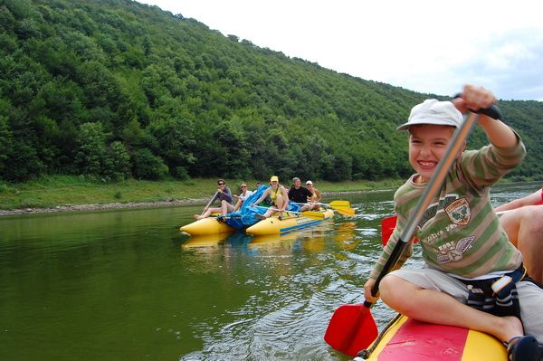

Мої плани
Цього року в планах нашої родини спробувати такий тип відпочинку як рафтинг. Рафтинг-тури по Дністру це активний і пізнавальний тип сімейного відпочинку в Україні. На бе¬реги Дністров¬ського каньйону рясно всі¬яні замками, фортецями, гро¬тами, печерами, водоспа¬дами. Можна засмагати, плавати, без напруження працювати веслом, засинати під шепіт Дністра в наметі .
